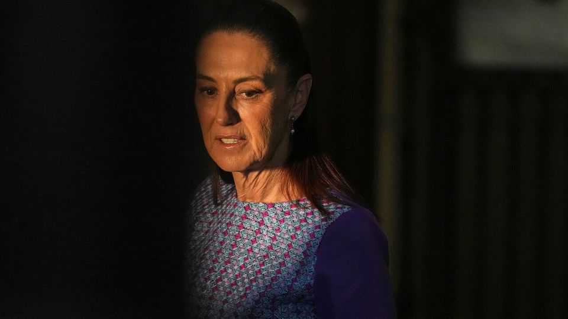

Mexico’s president stops turning the other cheek
Claudia Sheinbaum has abandoned her cool demeanour as Donald Trump attacks her political party

Aug 6th 2026
Mexico’s president, Claudia Sheinbaum, has said repeatedly that she approaches Donald Trump with cabeza fría (a cool head). Her strategy, shrugging off his rhetoric while quickly meeting his demands, has won her many fans, including in the White House. Mr Trump has called her “terrific” and “elegant”.
Yet she has not used the phrase since March. Tensions with the United States have been growing over security, migration and trade. “This is one of the most difficult years in the last hundred of the Mexico-US relationship,” says Rafael Fernández de Castro of the University of California, San Diego. Ms Sheinbaum’s rhetoric has shifted from stoic to defiant.
The biggest clash is over security. The United States is no longer just asking Ms Sheinbaum to crack down on drug gangs; it is pursuing her allies. In April the Trump administration indicted the then governor of Sinaloa, Rubén Rocha Moya, on charges including drug-trafficking. Mr Rocha Moya, who denies wrongdoing, is close to Andrés Manuel López Obrador, the founder of Morena, Ms Sheinbaum’s party. More than 50 Morena politicians have had their American visas revoked, according to Reuters, a news service.
Mexicans are increasingly suspicious of American security agencies, worrying that they operate in Mexico outside the oversight of Ms Sheinbaum’s government. That impression was reinforced in July, when the FBI put on public display the aeroplane used to fly Ismael “El Mayo” Zambada, a gang boss, out of Mexico and into the United States in 2024. Mexico’s government had been assured that American agencies did not take part in his capture. Ms Sheinbaum has launched an investigation.
As an issue, migration had until recently been relatively calm. Since Mr Trump returned to the White House in 2025, Mexico has helped him reduce the number of migrants crossing into the United States illegally to a trickle. But on July 7th an Immigration and Customs Enforcement (ICE) agent shot dead a Mexican in Houston. Lorenzo Salgado Araujo had lived in the United States for 35 years and was not even the target of the operation. He was the 17th Mexican to die in ICE custody or operations since Mr Trump returned to office.
Ms Sheinbaum might have kept quiet if Mr Trump had agreed to extend the United States–Mexico–Canada Agreement beyond its current expiry in 2036. On July 1st he refused. The free-trade deal will now be reviewed annually, creating uncertainty. Ms Sheinbaum was “really banking” on the extension after kowtowing to Mr Trump, says Lila Abed of the Inter-American Dialogue, a think-tank in Washington.
Ms Sheinbaum has become less obedient. She is refusing to extradite Mr Rocha Moya. Mexico’s courts are unlikely to find him guilty. Two days after the shooting in Houston she said that her government would ask for criminal charges to be brought in American courts for the shootings of Mexicans whose “only crime is working honestly in the United States”.
It is hard not to feel sympathy for Ms Sheinbaum. But in hardening her approach to Mr Trump, she may be missing an opportunity. She could use his attacks as cover to tackle what the Americans have correctly identified as one of Mexico’s most serious problems: political corruption. Instead, she has taken on a fierier, more leftist tone in recent speeches, while dismissing unfavourable media reports as “lies”.
Clearly, it is hard to predict how Mr Trump will react. It will be a “delicate dance” in Mexico, too, says Ms Abed. Lots of Mexicans want Mr Rocha Moya extradited. They may accept Ms Sheinbaum losing her cool with Mr Trump; less so an embrace of allies accused of corruption. ■